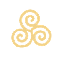
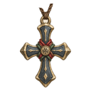

<!doctype html>
<html lang="en"><meta charset="utf-8"><meta name="viewport" content="width=device-width,initial-scale=1"><title>Niamh’s Satchel · Relics</title>
<style>
@font-face{font-family:Fondamento;src:url('../fonts/Fondamento-Regular.ttf')}*{box-sizing:border-box}body{margin:0;background:#161912;color:#f6edd8;font:16px Georgia,serif}button{font:inherit;color:inherit;cursor:pointer}button:focus-visible{outline:3px solid #fff2c5;outline-offset:3px}button:disabled{cursor:default}
#stage{position:relative;width:100%;height:min(85vh,56.25vw);min-height:350px;overflow:hidden;container-type:inline-size;background:#253629}#woods{position:absolute;inset:-2%;background:linear-gradient(0deg,#18221fc9,transparent 48%),url('../../MJ_ref/FOREST_KEY_01.png') center/cover;animation:drift 14s ease-in-out infinite alternate}@keyframes drift{to{transform:scale(1.045) translateX(-1%)}}#stage.paused #woods{animation-play-state:paused}#stage.village #woods{background-image:linear-gradient(0deg,#18221fc9,transparent 48%),url('../../TechArtAsset/Menu/MENU_BG_16x9.png')}
#world{position:absolute;bottom:8%;left:7%;text-shadow:0 1px 6px #000}#world h2{font:3.8cqw Fondamento;margin:.2em 0}#world p{font-size:max(16px,1.5cqw)}button.action{background:#283428;border:1px solid #b89b65;padding:.5em 1em;border-radius:3px}
#veil{position:absolute;inset:0;background:#111810a8;display:grid;place-items:center}
#bag{position:relative;width:78%;padding:2.3% 3.4% 1.6%;background:repeating-linear-gradient(83deg,#fff2 0px,transparent 1px,transparent 3px),linear-gradient(110deg,#4b3928,#32291f 64%,#493727);border:4px solid #604730;border-radius:4% 3% 7% 6% / 10% 12% 15% 14%;box-shadow:0 1.2cqw 2.8cqw #0e0c08b5,inset 0 0 1.2cqw #1a1812}
header{display:flex;align-items:center;justify-content:space-between}h1,h2,p{margin:0}h1{font:3.5cqw Fondamento;letter-spacing:-.025em}.close{border:1px solid #a5906e;border-radius:3px;background:#322b22;padding:.3em .7em;font-size:1.24cqw}nav{display:flex;gap:2.3cqw;margin:1.3cqw 0;border-bottom:1px solid #ab957073;color:#c4b59d;font:1.55cqw Fondamento}nav span{padding-bottom:.6cqw}nav b{color:#f3d79a;border-bottom:2px solid;display:flex;align-items:center;gap:.35cqw}nav img{width:2.1cqw}
article{--frame-width:clamp(6px,.8cqw,16px);position:relative;isolation:isolate;display:grid;grid-template-columns:39% 1fr;min-height:18cqw}
article::before{content:"";position:absolute;inset:calc(var(--frame-width) * .55);z-index:-1;pointer-events:none;background:repeating-linear-gradient(0deg,#fcf3cf08 0px,transparent 1px,transparent 3px),linear-gradient(110deg,#273b32,#25322c);box-shadow:inset 0 0 2cqw #121b18}
.pocket{position:relative;margin:1.4cqw;display:grid;place-items:center;aspect-ratio:1.4}
.pocket::before{
  content:"";
  position:absolute;
  inset:0;
  pointer-events:none;
  border:1px solid transparent;
  border-image: url('../../TechArtAsset/UI/Frame/UI_frame_celtic.png') 210 / 14% / 0 round;
}
article::after{
  content:"";position:absolute;inset:0;pointer-events:none;
  border:1px solid transparent;
  border-image:url('../../TechArtAsset/UI/HUD/UI_frame_thin.png') 24 / var(--frame-width) / 0 stretch;
}
.pocket::after{
  content:"";position:absolute;inset:0;pointer-events:none;
  --stud:radial-gradient(circle closest-side,#d6ac63 94%,transparent 100%);
  --size:clamp(4px,.56cqw,11px);
  background:var(--stud) 38% 1.25%,var(--stud) 62% 1.25%,var(--stud) 1.25% 50%,var(--stud) 98.75% 50%,var(--stud) 38% 98.75%,var(--stud) 62% 98.75%;
  background-size:var(--size) var(--size);background-repeat:no-repeat;
}
#icon{width:61%;height:12.5cqw;object-fit:contain;filter:drop-shadow(0 .45cqw .45cqw #060a09)}
.copy{padding:2.4cqw 2.3cqw;display:flex;flex-direction:column;justify-content:center}.copy h2{font:3.25cqw Fondamento}.copy small{font:1.2cqw Georgia;color:#efce8c;letter-spacing:.04em;margin-top:.35em}.copy p{color:#e6e0cf;font:1.55cqw/1.4 Georgia;max-width:28ch;margin-top:.65em}footer{display:flex;justify-content:space-between;padding-top:1cqw;color:#d7c7a9;font-size:1.16cqw}kbd{font:inherit;text-decoration:underline}aside{max-width:1200px;margin:auto;padding:17px 3%;font:15px/1.5 'Microsoft YaHei',sans-serif}aside div{display:flex;gap:8px;flex-wrap:wrap;margin:.75em 0}aside button{background:#283126;border:1px solid #7c806e;border-radius:4px;padding:.4em .8em}aside button:disabled{opacity:.38}#notice{color:#e3cd98}[hidden]{display:none!important}
@media(max-width:650px){#stage{min-height:65vw}#bag{width:94%}.copy p{font-size:2.3cqw}.copy small,footer,.close{font-size:2cqw}nav{font-size:2.25cqw}}
</style>
<main id="stage"><div id="woods"></div><section id="world"><h2 id="place"></h2><p id="status"></p><button class="action" id="open" hidden><kbd>F</kbd> &nbsp; Satchel</button></section>
<section id="veil" hidden aria-label="Satchel"><div id="bag"><header><h1>Niamh’s Satchel</h1><button id="close" class="close">Close</button></header>
<nav aria-label="Collections"><b>Relics</b><span>Ogham Stones</span><span>Memories</span><span>Niamh</span></nav>
<article><div class="pocket"></div>
<div class="copy"><h2 id="item"></h2><small id="cord">Broken cord</small><p id="desc"></p></div></article><footer><span>Game paused</span><span><kbd>F</kbd> / <kbd>Esc</kbd> &nbsp; Close</span></footer></div></section></main>
<aside lang="zh-CN"><strong>圣物页试排 · 审阅控制</strong>　先模拟走近十字架，再按 F 查看圣物。其余三个页签仅示意位置。
<div><button id="collect">走近森林十字架</button><button id="travel">往返村庄与森林</button><button id="story">试看过场锁定</button><button id="wall">触发首次破障</button><button id="reset">重看拾取前</button></div><output id="notice" aria-live="polite"></output></aside>
<script>
const el=id=>document.getElementById(id);
let owned=false, bag=false, firstPickup=false, forest=true, cleared=false, lock='', timers=[];
const phases=(steps,done)=>{firstPickup=false;let elapsed=0;for(const [name,ms] of steps){timers.push(setTimeout(()=>{lock=name;render()},elapsed));elapsed+=ms}lock=steps[0][0];render();timers.push(setTimeout(()=>{lock='';done();render();},elapsed))};
function render(){
 el('stage').className=(bag?'paused ':'')+(forest?'':'village');el('world').hidden=bag;el('veil').hidden=!bag;el('place').textContent=forest?'Forest Path':'Village';
 el('status').textContent=lock||(firstPickup?'Iron Cross found. Press F to open your satchel.':null)||(cleared&&forest?'The path is clear.':owned?'The iron cross is with you.':'A glint among the roots.');
 el('open').hidden=!owned||!!lock;
 el('item').textContent='Iron Cross';
 el('desc').textContent='I left it with her. The cord has snapped, but the iron is whole.';
 for(const id of ['collect','travel','story','wall'])el(id).disabled=bag||!!lock;
 el('collect').disabled ||=owned||!forest;el('wall').disabled ||=!owned||!forest||cleared;
 el('notice').textContent=bag?'已暂停。按 F 或 Esc 关闭。':lock?'剧情锁定中，可按 F 检查。':owned?'已持有铁十字架。可打开小挎包复查。':'拾取前小挎包尚未解锁。';
}
function toggle(){if(lock||!owned)return;firstPickup=false;bag=!bag;render();el(bag?'close':'open').focus({preventScroll:true})}
el('close').onclick=el('open').onclick=toggle;
document.addEventListener('keydown',e=>{if(e.ctrlKey||e.altKey||e.metaKey)return;if(e.key.toLowerCase()==='f'||(bag&&e.key==='Escape')){e.preventDefault();if(!e.repeat)toggle()}});
el('collect').onclick=()=>{if(owned||bag||lock||!forest)return;owned=true;firstPickup=true;render()};
el('travel').onclick=()=>phases([['Crossing…',1000]],()=>{forest=!forest});
el('story').onclick=()=>phases([['Prologue',1600],['Chapter I · Astray',1400],['Entering the village…',850]],()=>{forest=false});
el('wall').onclick=()=>phases([['Raising the cross',700],['A thread of light',700],['The beam strikes',3000],['The thorns dissolve',1400]],()=>{cleared=true});
el('reset').onclick=()=>{timers.forEach(clearTimeout);timers=[];owned=cleared=bag=firstPickup=false;forest=true;lock='';render()};render()
</script></html>
